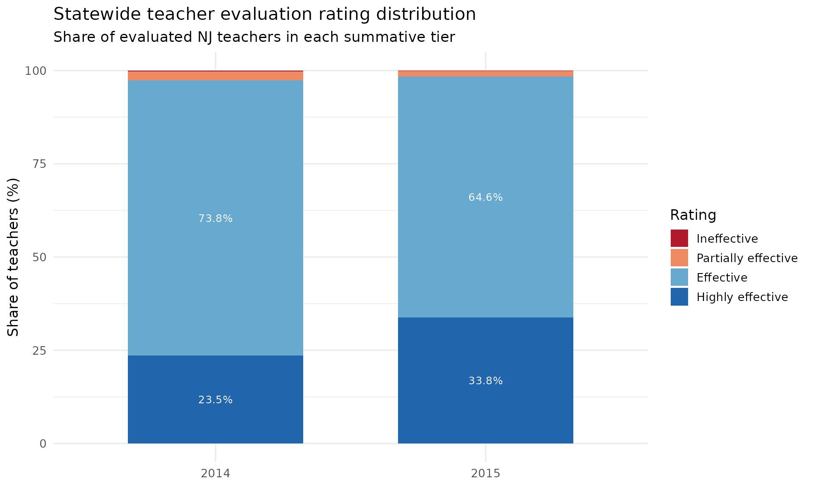
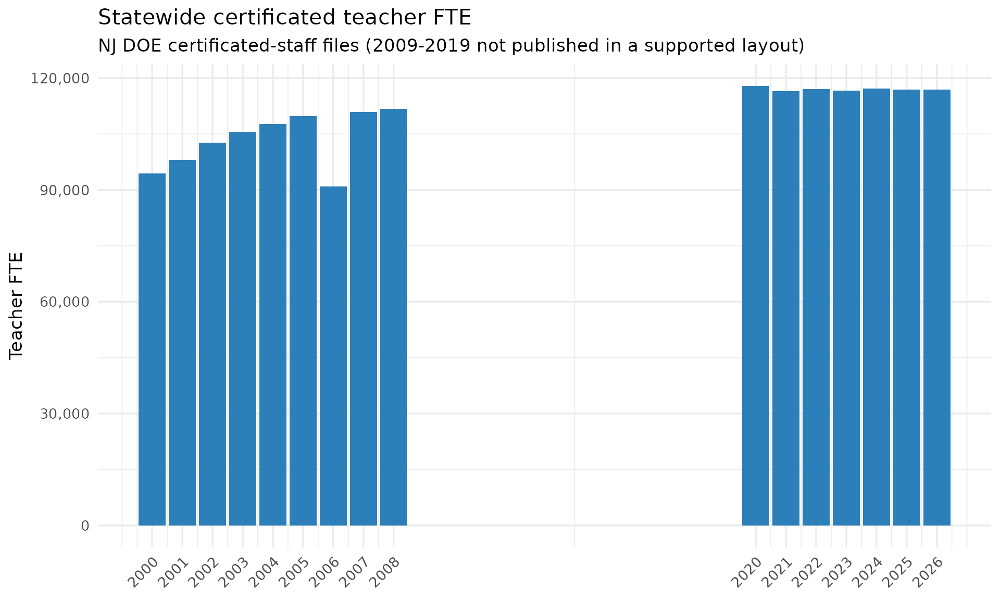
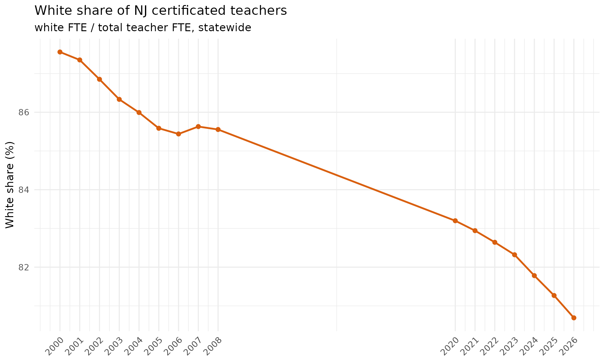

Staff History: Educator Evaluations & the Certificated Workforce
Source:vignettes/nj-staff-history.Rmd
nj-staff-history.RmdTwo NJ DOE “doedata” staff sources sit outside the School Performance
Reports and reach back well before them.
fetch_staff_evaluations() returns the summative educator
evaluation rating distributions NJ published for the
three years it ran the file (2014-2016), and
fetch_certificated_staff() returns the deep
certificated-staff FTE series by position, race, and
gender (2000-2008 and 2020-2026; the 2009-2019 intermediate files use a
non-uniform layout and are not supported). Every number below traces to
a downloaded NJ DOE file: a "*" suppression mask is
NA, and a race column an era did not report is
NA, never zero.
Where do teacher evaluation ratings land?
NJ’s summative evaluation places each educator in one of four tiers.
The statewide teacher distribution (the published is_state
row, available 2014 and 2015) clusters heavily at the top two tiers, and
the highly effective share jumped sharply between the
two years.
eval_state <- bind_rows(
fetch_staff_evaluations(2014, level = "district"),
fetch_staff_evaluations(2015, level = "district")
) %>%
filter(is_state, staff_category == "teachers")
tiers <- c("ineffective", "partially_effective", "effective", "highly_effective")
eval_long <- eval_state %>%
select(end_year, all_of(tiers)) %>%
pivot_longer(all_of(tiers), names_to = "rating", values_to = "n") %>%
group_by(end_year) %>%
mutate(share = 100 * n / sum(n, na.rm = TRUE)) %>%
ungroup() %>%
mutate(rating = factor(rating, levels = tiers))
# Print-before-plot: confirm the data feeding the chart.
stopifnot(nrow(eval_long) > 0)
eval_long %>% arrange(end_year, rating) %>% as.data.frame()
#> end_year rating n share
#> 1 2014 ineffective 205 0.1938369
#> 2 2014 partially_effective 2558 2.4187067
#> 3 2014 effective 78099 73.8461975
#> 4 2014 highly_effective 24897 23.5412589
#> 5 2015 ineffective 169 0.1586229
#> 6 2015 partially_effective 1490 1.3985095
#> 7 2015 effective 68845 64.6177094
#> 8 2015 highly_effective 36038 33.8251582
ggplot(eval_long, aes(x = factor(end_year), y = share, fill = rating)) +
geom_col(width = 0.65) +
geom_text(aes(label = ifelse(share >= 3, sprintf("%.1f%%", share), "")),
position = position_stack(vjust = 0.5), colour = "white", size = 3.4) +
scale_fill_manual(
values = c(ineffective = "#b2182b", partially_effective = "#ef8a62",
effective = "#67a9cf", highly_effective = "#2166ac"),
labels = c("Ineffective", "Partially effective", "Effective",
"Highly effective")
) +
labs(
title = "Statewide teacher evaluation rating distribution",
subtitle = "Share of evaluated NJ teachers in each summative tier",
x = NULL, y = "Share of teachers (%)", fill = "Rating"
) +
theme_minimal(base_size = 13)
Effective and highly effective together account for more than 97% of teachers in both years, and highly effective alone climbs from about 24% to about 34% in a single year. (The 2016 workbook publishes no statewide aggregate row, so the clean statewide comparison runs 2014-2015.)
The certificated teacher workforce, across two eras
fetch_certificated_staff() reports staff
full-time-equivalents (FTE), so counts are fractional. Pulling the
statewide teacher total across both covered eras shows a workforce that
grew through the 2000s and has held roughly flat in the 2020s.
years <- c(2000:2008, 2020:2026)
teachers_state <- bind_rows(lapply(years, function(y) {
fetch_certificated_staff(y, level = "state") %>%
filter(position == "teachers", gender == "total") %>%
transmute(end_year, white, total)
}))
stopifnot(nrow(teachers_state) > 0)
teachers_state %>% as.data.frame()
#> end_year white total
#> 1 2000 82666.0 94415.0
#> 2 2001 85667.0 98072.0
#> 3 2002 89216.0 102723.0
#> 4 2003 91134.0 105561.0
#> 5 2004 92568.0 107646.0
#> 6 2005 94001.0 109832.0
#> 7 2006 77668.0 90904.0
#> 8 2007 95019.0 110964.0
#> 9 2008 95638.0 111786.0
#> 10 2020 98078.4 117885.1
#> 11 2021 96624.5 116495.7
#> 12 2022 96674.4 116979.8
#> 13 2023 96066.6 116698.3
#> 14 2024 95794.3 117134.7
#> 15 2025 94984.6 116878.6
#> 16 2026 94336.4 116910.8
ggplot(teachers_state, aes(x = end_year, y = total)) +
geom_col(fill = "#2c7fb8") +
scale_x_continuous(breaks = years) +
scale_y_continuous(labels = scales::comma) +
labs(
title = "Statewide certificated teacher FTE",
subtitle = "NJ DOE certificated-staff files (2009-2019 not published in a supported layout)",
x = NULL, y = "Teacher FTE"
) +
theme_minimal(base_size = 13) +
theme(axis.text.x = element_text(angle = 45, hjust = 1))
The gap from 2009 to 2019 is a coverage gap, not a workforce collapse: those years exist but in a drifting layout the fetcher refuses to parse rather than risk misaligned values. The single low bar at 2006 is the value NJ published in that year’s file and is passed through as-is.
The teaching workforce got less white
The same series carries race, so the white share of the teacher workforce is directly computable across both eras. It has drifted down from roughly 88% at the start of the 2000s toward about 81% in the mid-2020s.
white_share <- teachers_state %>%
mutate(pct_white = 100 * white / total)
stopifnot(nrow(white_share) > 0)
white_share %>%
filter(end_year %in% c(2000, 2008, 2020, 2026)) %>%
as.data.frame()
#> end_year white total pct_white
#> 1 2000 82666.0 94415.0 87.55600
#> 2 2008 95638.0 111786.0 85.55454
#> 3 2020 98078.4 117885.1 83.19830
#> 4 2026 94336.4 116910.8 80.69092
ggplot(white_share, aes(x = end_year, y = pct_white)) +
geom_line(colour = "#d95f0e", linewidth = 1) +
geom_point(colour = "#d95f0e", size = 2) +
scale_x_continuous(breaks = years) +
labs(
title = "White share of NJ certificated teachers",
subtitle = "white FTE / total teacher FTE, statewide",
x = NULL, y = "White share (%)"
) +
theme_minimal(base_size = 13) +
theme(axis.text.x = element_text(angle = 45, hjust = 1))
Note that the legacy era (2000-2008) reported a single combined
Asian/Pacific Islander group, so fetch_certificated_staff()
carries that combined count in asian and leaves
pacific_islander and two_or_more as
NA for those years; the white share above is unaffected by
that distinction.
sessionInfo()
#> R version 4.6.1 (2026-06-24)
#> Platform: x86_64-pc-linux-gnu
#> Running under: Ubuntu 24.04.4 LTS
#>
#> Matrix products: default
#> BLAS: /usr/lib/x86_64-linux-gnu/openblas-pthread/libblas.so.3
#> LAPACK: /usr/lib/x86_64-linux-gnu/openblas-pthread/libopenblasp-r0.3.26.so; LAPACK version 3.12.0
#>
#> locale:
#> [1] LC_CTYPE=C.UTF-8 LC_NUMERIC=C LC_TIME=C.UTF-8
#> [4] LC_COLLATE=C.UTF-8 LC_MONETARY=C.UTF-8 LC_MESSAGES=C.UTF-8
#> [7] LC_PAPER=C.UTF-8 LC_NAME=C LC_ADDRESS=C
#> [10] LC_TELEPHONE=C LC_MEASUREMENT=C.UTF-8 LC_IDENTIFICATION=C
#>
#> time zone: UTC
#> tzcode source: system (glibc)
#>
#> attached base packages:
#> [1] stats graphics grDevices utils datasets methods base
#>
#> other attached packages:
#> [1] ggplot2_4.0.3 tidyr_1.3.2 dplyr_1.2.1
#> [4] njschooldata_0.9.24
#>
#> loaded via a namespace (and not attached):
#> [1] sass_0.4.10 generics_0.1.4 stringi_1.8.7 hms_1.1.4
#> [5] digest_0.6.39 magrittr_2.0.5 evaluate_1.0.5 grid_4.6.1
#> [9] timechange_0.4.0 RColorBrewer_1.1-3 fastmap_1.2.0 cellranger_1.1.0
#> [13] jsonlite_2.0.0 purrr_1.2.2 scales_1.4.0 codetools_0.2-20
#> [17] textshaping_1.0.5 jquerylib_0.1.4 cli_3.6.6 crayon_1.5.3
#> [21] rlang_1.2.0 bit64_4.8.2 withr_3.0.3 cachem_1.1.0
#> [25] yaml_2.3.12 otel_0.2.0 parallel_4.6.1 downloader_0.4.1
#> [29] tools_4.6.1 tzdb_0.5.0 vctrs_0.7.3 R6_2.6.1
#> [33] lifecycle_1.0.5 lubridate_1.9.5 snakecase_0.11.1 stringr_1.6.0
#> [37] bit_4.6.0 fs_2.1.0 vroom_1.7.1 ragg_1.5.2
#> [41] janitor_2.2.1 pkgconfig_2.0.3 desc_1.4.3 pkgdown_2.2.0
#> [45] pillar_1.11.1 bslib_0.11.0 gtable_0.3.6 glue_1.8.1
#> [49] systemfonts_1.3.2 xfun_0.59 tibble_3.3.1 tidyselect_1.2.1
#> [53] knitr_1.51 farver_2.1.2 htmltools_0.5.9 labeling_0.4.3
#> [57] rmarkdown_2.31 readr_2.2.0 compiler_4.6.1 S7_0.2.2
#> [61] readxl_1.5.0